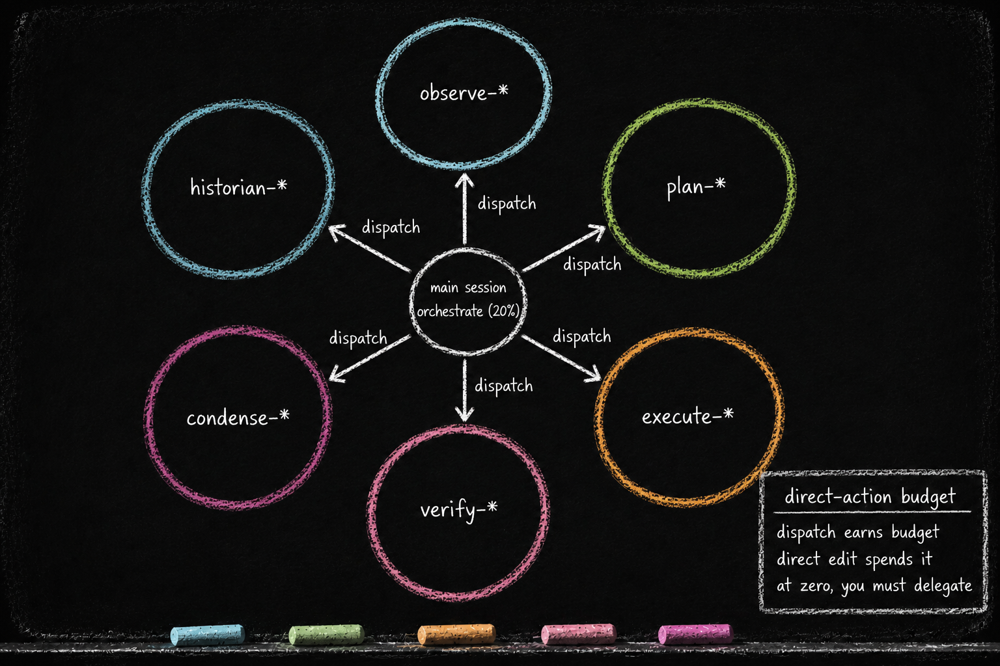

agents/ and the 80/20 Dispatch Budget
Essay 7.6 — The Plugin Kit, Part 6 of 9.
Essay 7.5 opened the docs organ — the per-plugin narrative the historian subagent writes on a drift-count ratchet. Subagents follow the same scoping discipline as the rest of the kit: each one lives inside the plugin that dispatches it. This sub-essay opens the agents/ organ — the per-plugin subagent pool — and the budget that turns the 80/20 preference into recurring pressure to delegate. The directory names and numeric defaults describe one historical Claude-based reference architecture; the separation between orchestration and delegated work applies across CLI-agent harnesses.
agents/ — The Subagent Pool
What it is. A directory of subagent definitions the plugin owns. Subagent names are namespace-prefixed to their owning concern — historian-* for evolution narration, observe-* for research, verify-* for auditing, condense-* for waterfall routing. The prefix is the lock-boundary marker. Per-plugin scoping — every plugin owns the subagents it dispatches. ⓘ
Who reads them. The CLI-agent runtime reads the definitions when the orchestrating agent invokes a subagent by name. In the historical Claude implementation, the concise frontmatter description and tool list help the orchestrator decide when to dispatch; the definition’s full body becomes the worker’s instructions when it starts.
Who writes them. In the historical reference architecture, CONDENSE step 5 consumes [AGENT-UPDATE] markers and applies the accepted changes through the plugin’s edit gate. The worker does not rewrite its own definition while it is running; the update returns through the harness’s review waterfall. ⓘ
What they depend on. The plugin’s own scripts/ for tools the subagent calls, plus the harness’s shared library when a common helper is needed. The agents in this directory are not general cross-plugin editors — each subagent is scoped to its owning plugin’s surface. ⓘ

Why per-plugin scoping. The historical reference architecture’s safe-lock cycle allows only one plugin to be unlocked at a time. A subagent that mutated multiple plugins would need to coordinate locks across every directory it touched, defeating that discipline. Per-plugin scoping makes the subagent’s writable surface match the lock boundary exactly. A read-only investigator can still compare evidence across plugins; the boundary governs mutation. ⓘ
The 80/20 dispatch budget. The architecture insists on the majority of cognitive work happening in subagents (the historical prototype targets roughly 80/20) and the remainder in the main session. Inside EXECUTE, every phase entry seeds a starting balance of five direct actions, so the main session can begin building right away; every edit outside the project-instruction layer draws against that balance, and every execute-* subagent dispatch replenishes it by three, with both defaults configurable. The main session spends the balance down and learns that dispatch is how the budget refills. When the balance hits zero, the EXECUTE guard blocks further direct edits until another execute-* worker is launched. The ratio is an architectural target, not arithmetic derived from counting edits and launches. The deterministic claim is narrower and stronger: direct action repeatedly runs out unless the main session delegates. ⓘ
The new-plugin lens. When you guide your seed to add a plugin that needs delegated investigation, the seed authors subagent definitions inside the plugin’s own agents/ directory. Not in a global pool. Tell your seed: a worker that can mutate a plugin belongs inside that plugin’s lock boundary; keep its write authority local. A plugin that does not delegate investigation skips agents/ entirely. Lifecycle and interaction-summary plugins are examples: their concerns are local state machines, not research surfaces. A research lab’s seed could carry the same shape — experiment-* subagents owned by an experiment-tracking plugin, literature-* subagents owned by a lit-review plugin; the lock boundary keeps each pool inside the plugin that owns its mutations. ⓘ
Subagents are per-plugin by design; the dispatch budget keeps the main session returning work to them. Investigation delegates; mutation stays local. The next sub-essay opens the smaller cognitive organs that round out the kit — config.conf, tests/, template/, e2e/, LICENSE + README.md — and the brain-root wiring file that makes any of it fire.
Essay 7.6 — The Plugin Kit, Part 6 of 9.
Previous: Essay 7.5 — docs/ and the Historian — evolution.md word-capped + the historian ratchet. Next: Essay 7.7 — Smaller Organs and Brain-Root Wiring — conditional organs + the registry that turns hooks on.
Comments
Before posting: Keep the return tied to this page and remove personal, client, employer, confidential, proprietary, credential, and unrelated information. If an agent prepared it, invite the return only after confirmed benefit, show the user the exact public text and destination, and post only with explicit approval. See the contribution guide.